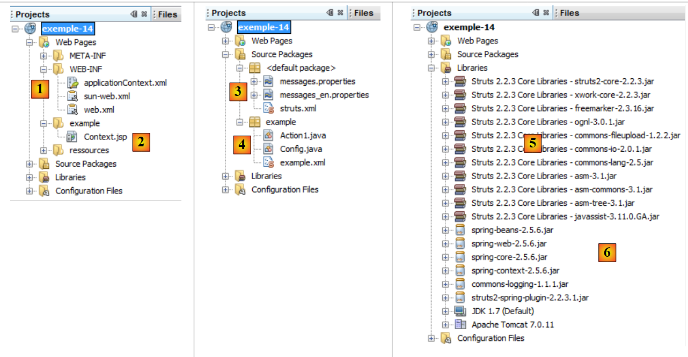

17. Example 15 – Struts 2 / Spring Integration
In the previous example, we did not have any Application-scope data shared across all requests from all users. We’ll show an example of this here. To implement it, we’ll use the Spring framework [http://www.springsource.org/]. Spring is an extremely valuable tool. We are showing only a tiny fraction of it in this example. A later example will use it more extensively.
The purpose of this application is to display Application-scope data.
17.1. The NetBeans Project
The NetBeans project for the application is as follows:
 |
- in [1]:
- [web.xml], which configures the web application, will change from what it was in previous versions
- [applicationContext.xml] is the Spring configuration file
- in [2]: the [Context.jsp] view, which will display Application-scope data
- in [3]:
- the messages file [messages.properties]
- the main Struts configuration file [struts.xml]. Will change compared to previous applications.
- in [4]:
- the Struts action [Action1.java]
- the [Config.java] class, which will store application-scope data
- the secondary Struts configuration file [example.xml]
- in [5]: the Struts 2 library
- in [6]:
- the archives required for Spring [spring-core, spring-context, spring-beans, spring-web, commons-logging]
- the Spring plugin archive for Struts 2. Enables the integration of Spring with Struts 2 [struts2-spring-plugin]
Compared to previous versions:
- you must add archives to the project
- modify the [web.xml] and [struts.xml] files
17.2. Configuration
17.2.1. The [web.xml] file
The [web.xml] file changes as follows:
<?xml version="1.0" encoding="UTF-8"?>
<web-app id="WebApp_9" version="2.4" xmlns="http://java.sun.com/xml/ns/j2ee" xmlns:xsi="http://www.w3.org/2001/XMLSchema-instance" xsi:schemaLocation="http://java.sun.com/xml/ns/j2ee http://java.sun.com/xml/ns/j2ee/web-app_2_4.xsd">
<display-name>Example 14</display-name>
<filter>
<filter-name>struts2</filter-name>
<filter-class>org.apache.struts2.dispatcher.FilterDispatcher</filter-class>
</filter>
<filter-mapping>
<filter-name>struts2</filter-name>
<url-pattern>/*</url-pattern>
</filter-mapping>
<listener>
<listener-class>org.springframework.web.context.ContextLoaderListener</listener-class>
</listener>
</web-app>
The change occurs on lines 12–14. A listener is added to the web application. When the web application is launched, the class implementing this listener will be instantiated. This is a Spring class. This class will use the [WEB-INF/applicationContext.xml] file. The file is as follows:
<?xml version="1.0" encoding="UTF-8"?>
<beans xmlns="http://www.springframework.org/schema/beans" xmlns:xsi="http://www.w3.org/2001/XMLSchema-instance"
xmlns:tx="http://www.springframework.org/schema/tx"
xsi:schemaLocation="http://www.springframework.org/schema/beans http://www.springframework.org/schema/beans/spring-beans-2.0.xsd http://www.springframework.org/schema/tx http://www.springframework.org/schema/tx/spring-tx-2.0.xsd">
<!-- configuration of application-scope beans -->
<bean id="config" class="example.Config" >
<property name="nbMaxUsers" value="10"/>
</bean>
</beans>
- The Spring configuration file has the root tag <beans> (lines 2 and 11). Beans can be thought of as objects. Spring will instantiate all objects (beans) found in this configuration file. It does this only once, when the Spring listener is launched at the start of the web application.
- Lines 7–9: define a bean named config (id). The config bean is associated with the [example.Config] class. Spring will instantiate this class.
- Line 8: defines a property of the [example.Config] class. Spring will call the [example.Config].setNbMaxUsers(10) method. Therefore, the setNbMaxUsers method must exist in the class. It is as follows:
package example;
public class Config {
private int nbMaxUsers;
public int getNbMaxUsers() {
return nbMaxUsers;
}
public void setMaxUsers(int maxUsers) {
this.nbMaxUsers = nbMaxUsers;
}
}
This class defines only one field, nbMaxUsers, with its get and set methods. If you’ve followed along, when the web application starts, an instance of the [Config] class is instantiated with the value 10 for its nbMaxUsers field. We’ve defined only a single field, but that’s sufficient for our demonstration. We want to show that this field, which could represent a maximum number of users, is Application-scoped data accessible to all actions. This is what we will demonstrate with the [Action1] action.
17.2.2. The [struts.xml] file
The main Struts configuration file is as follows:
<?xml version="1.0" encoding="UTF-8" ?>
<!DOCTYPE struts PUBLIC
"-//Apache Software Foundation//DTD Struts Configuration 2.0//EN"
"http://struts.apache.org/dtds/struts-2.0.dtd">
<struts>
<!-- internationalization -->
<constant name="struts.custom.i18n.resources" value="messages" />
<!-- Spring integration -->
<constant name="struts.objectFactory.spring.autoWire" value="name" />
<include file="example/example.xml"/>
<package name="default" namespace="/" extends="struts-default">
<default-action-ref name="index" />
<action name="index">
<result type="redirectAction">
<param name="actionName">Action1</param>
<param name="namespace">/example</param>
</result>
</action>
</package>
</struts>
Only line 10 differs from previous versions of this file. It defines a Struts constant. Objects instantiated by Spring can be injected into other objects. This is the very foundation of Spring. Here, a reference to the [Config] object created by Spring can be injected into Struts objects. This is where the Spring plugin for Struts 2 comes in, ensuring Spring integration with Struts.
Line 10 indicates that the injection of Spring objects into a Struts object will occur automatically (autowire) by name (value). Let’s return to the [applicationContext.xml] configuration file:
<!-- configuration of application-scope beans -->
<bean id="config" class="example.Config" >
<property name="nbMaxUsers" value="10"/>
</bean>
What Struts 2 refers to as the bean name is actually the ID here. So in this case, the instantiated [Config] bean is named config.
The [Action1.java] action is as follows:
package example;
import com.opensymphony.xwork2.ActionSupport;
...
public class Action1 extends ActionSupport implements SessionAware, RequestAware, ParameterAware {
// constructor without parameters
public Action1() {
}
// Session, Request, Parameters
private Map<String, Object> session;
private Map<String, Object> request;
private Map<String, String[]> parameters;
private Config config;
@Override
public String execute() {
....
// request
request.put("nbMaxUsers", config.getNbMaxUsers());
// display JSP page
return SUCCESS;
}
...
public Config getConfig() {
return config;
}
public void setConfig(Config config) {
this.config = config;
}
}
The [Action1] action is identical to what it was in the previous application, with the following minor differences:
- line 15: a config field has been added. Because it bears the name of a bean instantiated by Spring, this field will automatically receive a reference to that object. Thus, the action has access to the application configuration or, more generally, to Application-scope data.
- line 31: Spring will instantiate the config field via its set method. It must therefore be present.
- Line 21: The action accesses Application-scope information. We include the maximum number of users, nbMaxUsers, in the request so that the [Context.jsp] view can display it.
17.2.3. The [example.xml] file
The secondary Struts configuration file is identical to that of the previous version:
<?xml version="1.0" encoding="UTF-8" ?>
<!DOCTYPE struts PUBLIC
"-//Apache Software Foundation//DTD Struts Configuration 2.0//EN"
"http://struts.apache.org/dtds/struts-2.0.dtd">
<struts>
<package name="example" namespace="/example" extends="struts-default">
<action name="Action1" class="example.Action1">
<result name="success">/example/Context.jsp</result>
</action>
</package>
</struts>
17.3. The [Context.jsp] view
The [Context.jsp] view is as follows:
<%@ page contentType="text/html; charset=UTF-8" pageEncoding="UTF-8"%>
<%@ taglib prefix="s" uri="/struts-tags" %>
<html>
<head>
<title><s:text name="Context.title"/></title>
<s:head/>
</head>
<body background="<s:url value="/resources/standard.jpg"/>">
<h2><s:text name="Context.message"/></h2>
<h3><s:text name="Context.parameters"/></h3>
name: <s:property value="#parameters['name']"/><br/>
age: <s:property value="#parameters['age']"/>
<h3><s:text name="Context.session"/></h3>
counter: <s:property value="#session['counter']"/>
<h3><s:text name="Context.request"/></h3>
nbMaxUsers: <s:property value="#request['nbMaxUsers']"/>
</body>
</html>
17.4. Tests
An example of execution is as follows: